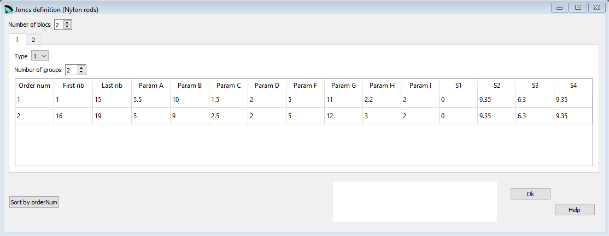

Joncs definition¶
In the window Joncs definition you control the creation of pockets used to place nylon rods on the ribs.
{kind=link}
Raw data:
*******************************************************
* 21. JONCS DEFINITION (NYLON RODS)
*******************************************************
2
2
1 1
2
1 1 15
5.5 10. 1.5 2.0
5. 11. 2.2 2.0
0.0 9.35 6.3 9.35
2 16 19
5. 9. 2.5 2.0
5. 12 3. 2.0
0.0 9.35 6.3 9.35
2 2
2
1 1 15
20. 2. 30. -2.0 3.0
0.0 9.35 6.3 9.35
2 16 20
40. 4. 30. -3.2 0.0
0.0 9.35 6.3 9.35
Number of blocs¶
Nose mylars is an optional section.
If you do not want to define/ use these parameters set the Number of blocs value to 0.
A bloc bundles either type 1 or type 2 rods.
Whithin a bloc you can define several groups of parameters, each group does define one pocket.
Type 1 rods¶
Type 1 rods are the typical wing nose rods.

Type 1 rods definition¶
First rib |
Last rib |
Param A |
Param B |
Param C |
Param D |
Param F |
Param G |
Param H |
Param I |
S1 |
S2 |
S3 |
S4 |
rib num |
rib num |
xeini [1] |
xefin [1] |
ye [2] |
n [3] |
xicni [1] |
xifin [1] |
yi [2] |
n [3] |
S1 [4] |
S2 [4] |
S3 [4] |
S4 [4] |
Type 2 rods¶
Type 2 rods can be placed on the rib wherever you want.

Type 2 rods definition¶
First rib |
Last rib |
Param A |
Param B |
Param C |
Param D |
Param E |
S1 |
S2 |
S3 |
S4 |
rib num |
rib num |
x-start [1] |
y-start [2] |
x-end [1] |
y-end [2] |
deflection f [2] |
0 |
S2 [4] |
S3 [4] |
S4 [4] |
Sort by Order Num¶
The button Sort by Order Num can be used to rearrange the definition lines. If for whatever reasons you will rearrange the lines, just define the numbering in an ascending order and press the Order button afterwards. Lepg will reorder the lines according to the numbering you’ve choosen.
A more detailed description you can find here Laboratori d'envol website.